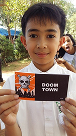
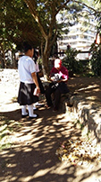
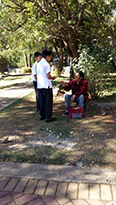

Tract Distribution with the Grade 5 and 6 Pupils
As a culminating activity for the Gr. 6 pupils on Missionary Stories the class has decided to conduct a tract distribution activity at Burnham Park together with the Grade 5 pupils. After the activity they were asked to write about what they have experienced.
We were blessed by giving the Word of God and those tracts. We were so thankful for what God has given to the people and us. Even though we have difficulties while distributing today we were still thankful. Thank you Lord for your blessings on us.
Lance Christian Dumangas
…We need to remember that we are doing this not to show off ourselves. It’s because of God. The lesson that I have learned is that don’t deprive others the Word of God but share it to people …as long as you live.
Christine Desire Tanglao
…one person asked, What is it? and How much will I pay you? I told him, -You don’t have to pay us because salvation is free, so all you need to do is read the tract and it would show you how to accept the Lord Jesus Christ.”
Ashley Gail Paway

When I was giving tracts to people- someone was happy, others were angry and they said bad things to us, while others simply refused. When someone refused I felt sad and I felt something painful in my heart.
Reyza Hope Ola
It feels good when people receive the tracts, especially when they receive Jesus as their personal Savior but when they refuse taking the tracts I feel sad because it means they don’t know Him very well.
Zimoun Arkan Gongora
…my experience was a little sad because some people refused the tracts but I learned that we have to pray for lost people to be saved and that we have to tell or preach the Gospel and I also learned that we have to stick as a group so that we won’t get lost. …my partner was too nervous but I said, “You can do it, just ask for God’s courage.”…
Eliza Mae Campiwer
At first I thought giving out tracts was easy but when we arrived at Burnham Park, it was hard. It was fun when people accept the tracts but it was sad when they refused them.
Jireh Perez
…I saw the guy threw the tract away. I felt sad then approached him and I said, “Sir, if you don’t like this tract, you could have refused it.” “I’m sorry.” He replied and got back the tract.
Reese Noelle Songayab
We went close to the beggar then we gave him a tract. I was really very happy because he received the tract and he said. “Thank you.”…and the lesson is even if they don’t want to receive the tracts just be happy. Don’t give up sharing the Word of God.
Eloieza Ruth Elisha Marzan
To be a Christian makes God happy. I gave all the tracts I had. I need to let the people know about God, that God loves us more, and that He can wash our sins away.
Jalen Kasid Songayab

…there was a very important lesson I’ve learned today, that I should not expect everyone to receive tracts I give. As long as I tried my very best and accomplish my goal.
Nina Rae Barawid
I thank God for giving me the opportunity to give out tracts in public places. I know that giving out tracts is a little part of being a Christian. …it was worth it even though it was hot…
Lougai Fermin
It was my first time so I was really shy but when I prayed to God there was no fear anymore.
Michael Kwon
I felt happy when I went out giving out the tracts, but when some of them threw the tracts away, I was unhappy. When we gave tracts to some people they didn’t want to take them. Even if only one got saved in our tract giving, I was still happy. The lesson I’ve learned, even if people don’t want to believe in Jesus Christ, don’t give up on them.
Noah Mendoza